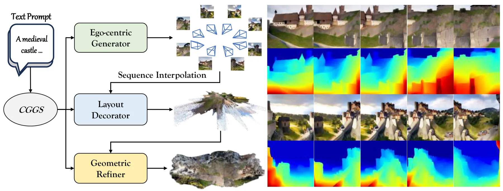
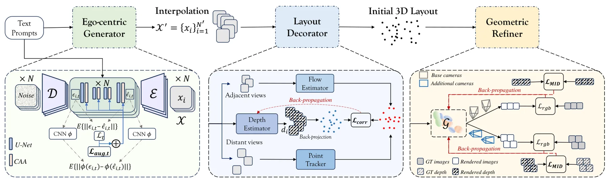
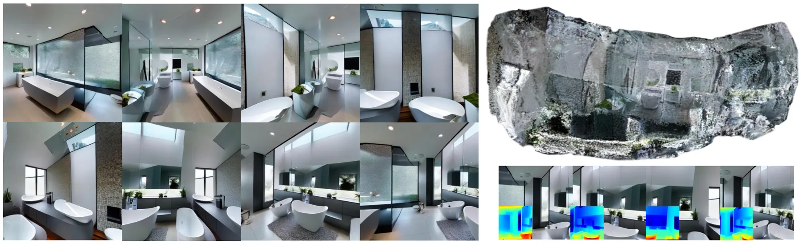
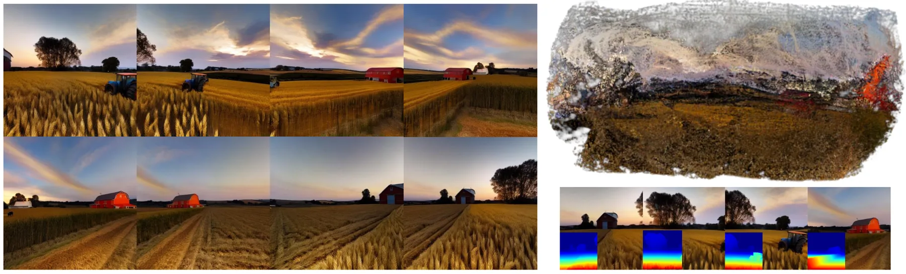
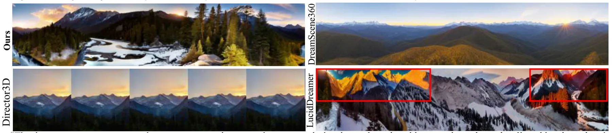

CGGS：面向第一视角文本到三维场景的几何一致性高斯泼溅CGGS: Consistency-Augmented Geometric Gaussian Splatting for Ego-Centric 3D Scene Generation
与稀疏视图、对应、深度和 3DGS 几何优化高度相关，但本质是生成式场景构建而非真实观测 SLAM，摘要无绝对几何指标。
一句话工作总结
结合多视图生成、点轨迹深度初始化和互信息深度损失，改善第一视角文本到 3DGS 的几何一致性。
摘要
CGGS 是面向第一视角文本驱动三维场景生成的框架，针对有限视角重叠造成的内容不一致与几何畸变。Ego-centric Generator 以一致性增强损失微调多视图 latent diffusion model，生成与文本对齐的二维内容；Layout Decorator 结合 optical flow 和 point-track correspondence 估计深度并形成稠密点云粗布局；Geometric Refiner 再通过基于熵的 Mutual Information Depth Loss 与分层优化改善 3D Gaussian reconstruction 的视觉质量和几何结构。
Challenges remain in ego-centric 3D scene generation due to limited view overlap and the dominant influence of individual perspectives on scene interpretation. These factors hinder the creation of viewpoint-consistent and semantically aligned visual content, as well as the construction of accurate geometric structures. In this paper, we propose CGGS, a text-to-3D framework aiming to enhance 3D-content-awareness and address geometric distortions in ego-centric scene generation. Firstly, the Ego-centric Generator is proposed by fine-tuning a Multi-View Latent Diffusion Model with consistency-augmented loss to generate consistent, high-fidelity 2D content aligned with textual descriptions. Then, Layout Decorator leverages optical flow and point-track correspondence to estimate depth, therefore producing dense point clouds as coarse layouts from the ego-centric 2D priors. Building on this initialization, Geometric Refiner is proposed to enhance 3D Gaussian reconstruction via an entropy-based Mutual Information Depth Loss (MID) combined with a hierarchical optimization scheme for improving visual quality and geometric structure. Comprehensive experiments demonstrate that CGGS outperforms previous methods in generating coherent and accurate text-driven 3D scenes.
中文解读摘录
- 作者：Zhenyu Sun, Xiaohan Zhang, Qi Liu, Huan Wang
- 价值判断：不是 SLAM，但其有限视角重叠、点轨迹对应、深度估计和 3DGS 几何优化与稀疏观测重建高度相关。
- 技术要点：一致性增强的多视图 latent diffusion 生成二维先验；Layout Decorator 用 optical flow 与 point-track correspondence 估计深度并初始化稠密点云；Geometric Refiner 用基于熵的 Mutual Information Depth Loss 和分层优化改善几何。
- 后续核查：需要区分生成先验带来的视觉提升与真实几何精度，检查相机轨迹、尺度、遮挡边界和点轨迹错误的敏感性。
- 链接：arXiv · PDF
图表/页面预览

{kind=link}

{kind=link}

{kind=link}

{kind=link}

{kind=link}
